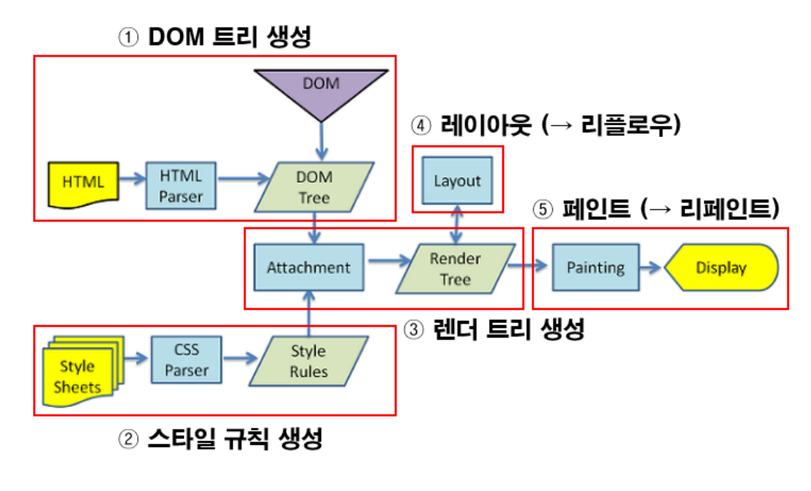

0315
DOM
Document Object Model
HTML 태그가 출력된 모양이나 콘텐츠를 제어하기 위해 웹 페이지에 작성된 HTML 태그 당 객체(DOM 객체) 생성
구성
- 프로퍼티(property)
- 메소드(method)
- 컬렉션(collection)
- 이벤트 리스너(event listener)
- CSS3 스타일
Randering
과정
- HTML을 파싱하여 DOM 트리를 만든다.
- CSS를 파싱하여 CSSOM 트리를 만든다.
- DOM과 CSSOM을 결합하여 렌더링 트리를 만든다.
- 렌더링 트리에서 각 노드의 크기와 위치를 계산한다.
- 개별 노드를 화면에 그린다.

SPA vs MPA
SPA(Single Page Application)
- 한 개(Single)의 Page로 구성된 Application.
- 새로운 페이지 요청이 있을 때 필요 데이터만 받아 갱신.
- 서버로부터 완전한 새로운 페이지를 불러오지 않고 현재의 페이지를 동적으로 다시 작성.
- SPA는 보통 CSR(Client Side Rendering)방식으로 렌더링.
MPA(Multi Page Application)
- 여러 개(Multiple)의 Page로 구성된 Application.
- 새로운 페이지를 요청할 때마다 서버에서 렌더링된 정적리소스가(HTML, CSS, JS)가 다운로드.
- 페이지를 이동하거나 새로고침하면 전체 페이지를 다시 렌더링.
- MPA는 SSR(Server Side Application)방식으로 렌더링.
정리: SPA는 페이지가 바뀔 때마다 페이지를 서버로부터 새로운 페이지를 불러오지 않아도 돼서 전체를 다시 렌더링할 필요가 없다.
0322
React
리엑트란?
- 사용자 인터페이스를 만들기 위한 JavaScript 라이브러리
- SPA(Single Page Application) 개발을 위한 프레임워크
- 사용자와 웹 사이트의 상호작용을 돕는 인터페이스를 만들기 위한 자바스크립트 기능 모음집
- 가상 DOM(Document object model)과 JSX(JavaScript XML) 방식으로 동작하는 프레임워크
리엑트의 장점
- 완성도 높고 이해하기 쉬운 개발 워크플로우
- 뛰어난 유연성과 호환성
- 손쉬운 컴포넌트 재사용성
- Virtual DOM으로 한층 강화된 고성능
- Flux와 Redux의 힘
- 다양한 툴 제공
- React Native의 강력한 기능
- 시장에 영향을 미치는 거대한 커뮤니티와 리소스
- HTML 확장을 위한 JSX 구문
- React Hook
Virtual DOM

뷰(HTML)에 변화가 있을 때, 구 가상돔과 새 가상돔을 비교하여 변경된 내용만 DOM에 적용한다. 이를 통해 브라우저 내에서 발생하는 렌더링 과정을 줄이면서 성능이 개선되는 것 이다.